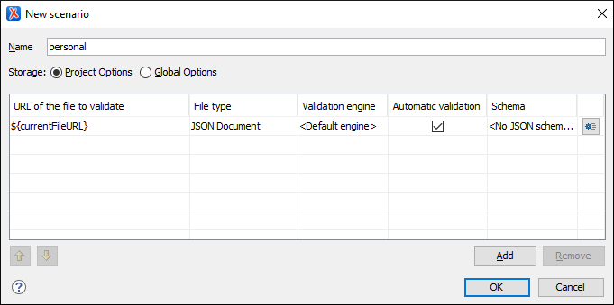

Creating a JSON Validation Scenario
Validation scenarios can be used to associate one or more JSON Schemas with a JSON document. Oxygen XML Editor also includes a built-in JSON Schematron Validator engine that can be specified in the validation scenario to validate JSON documents against a specified Schematron schema.
Creating a JSON Validation Scenario
-
Select the
 Configure Validation Scenario(s) action in one
of the following ways:
Configure Validation Scenario(s) action in one
of the following ways:- From the
 Validation
toolbar drop-down menu.
Validation
toolbar drop-down menu. - From the menu.
- From the Validate submenu, when invoking the contextual menu on a file in the Project view.
Step Result: The Configure Validation Scenario(s) dialog box is displayed.
- From the
-
Click the New button.
Step Result: A validation scenario configuration dialog box is displayed.
Figure 1. Validation Scenario Configuration Dialog Box This scenario configuration dialog box allows you to configure the following information and options:- Name
- The name of the validation scenario.
- Storage
- You can choose between storing the scenario in the Project Options or Global Options.
- URL of the file to validate
- The URL of the main module that includes the current module. It is also the
entry module of the validation process when the current one is validated. To
edit the URL, double-click its cell and
specify the URL of the main module by doing one of the following:
- Enter the URL in the text field or select it from the drop-down list.
- Use the
 Browse
drop-down button to browse for a local, remote, or archived file.
Browse
drop-down button to browse for a local, remote, or archived file. -
Use the
 Insert Editor Variable button to
insert an editor variable or a
custom editor
variable.
Insert Editor Variable button to
insert an editor variable or a
custom editor
variable.Figure 2. Insert an Editor Variable 
- File type
- The type of the document that is validated in the current validation unit. Oxygen XML Editor automatically selects the file type depending on the value of the URL of the file to validate field.
- Validation engine
- You can choose between the following types of validation engines for
validating JSON documents:
- Default engine - The built-in JSON Validator will be used. For JSON Schema documents, this type should not be chosen unless the document has a schema version specified.
- JSON Schema Validator - This type is for JSON Schema documents only. It will use the version specified in the JSON Schema, or if a version is not specified, the JSON Schema draft-04 will be used.
- JSON Schematron Validator - The built-in JSON
Schematron Validator will be used to validation JSON documents against a
specified Schematron schema.Note: For proper error localization, the root element of the Schematron schema should include the
@queryBindingattribute with the value of xslt2 after the Schematron namespace declaration:<sch:schema xmlns:sch="http://purl.oclc.org/dsdl/schematron" queryBinding="xslt2">
- Automatic validation
- If this option is selected, the validation operation defined by this row is also applied by the automatic validation feature. If the Automatic validation feature is disabled in the Document Checking preferences page, then this option is ignored, as the preference setting has a higher priority.
- Schema
- Displays the specified schema.
 Specify Schema
Specify Schema- Opens the Specify Schema dialog box that allows you to set a schema to be used for validating JSON documents.
 Move
Up
Move
Up- Moves the selected scenario up one spot in the list.
 Move Down
Move Down- Moves the selected scenario down one spot in the list.
- Add
- Adds a new validation unit to the list.
- Remove
- Removes an existing validation unit from the list.
- Configure any of the existing validation units according to the information above. You can use the buttons at the bottom of the table to add, remove, or move validation units.
- Click OK.
Result: The newly created validation scenario will now be included in the list of scenarios in the Configure Validation Scenario(s) dialog box. You can select the scenario in this dialog box to associate it with the current document and click the Apply associated button to run the validation scenario.